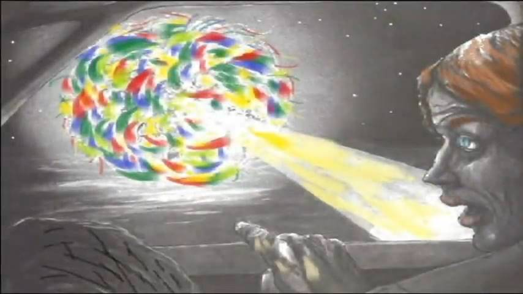
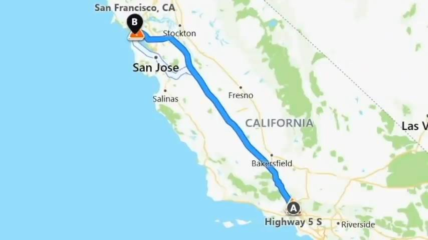
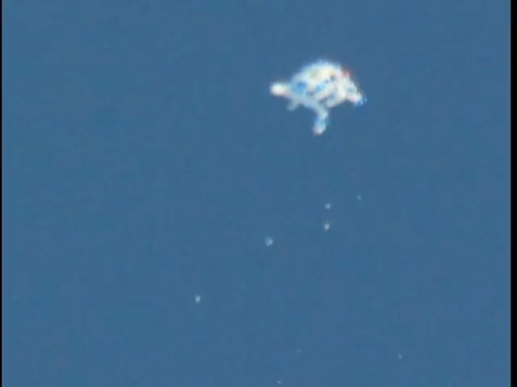
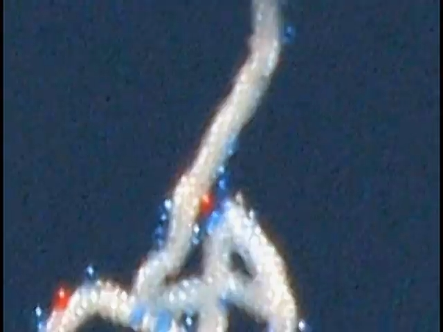
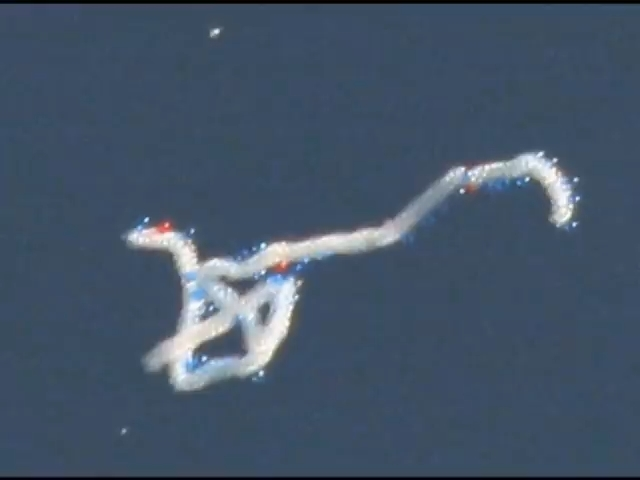
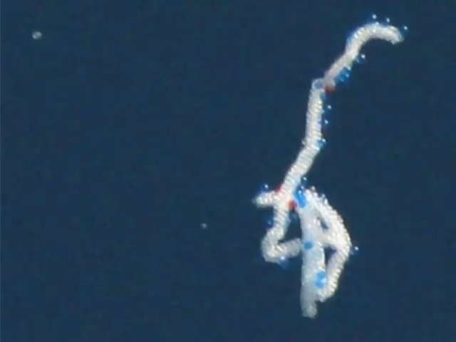
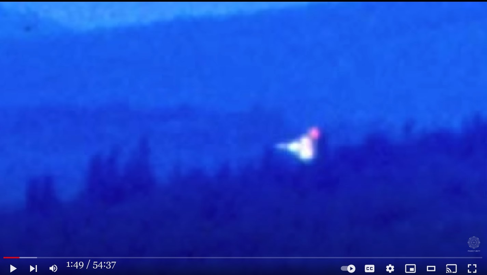

1982, CA : 道路脇に多色の奇妙な UFO が着陸 → missing-time、発話に一時的障害、運転者が入れ替わっていた ⇒ この正体を推測

前置き
- Preston Denett の解説動画からこの事件に絞って取り上げる。
手抜き
友人と一緒に車で深夜に車で人気のない高速道路を移動中に…
奇妙なものが道路の脇に着陸。
近づくに連れ、一時的に正常な発話できなくなった。
後日、友人に言われるまで UFO からビーム光を浴びたことを忘れていた。
ずっと自分が運転していた筈なのにいつの間にか友人が運転していた。
この UFO 遭遇によって、目撃者は人生が一変し、ハワイに移住した。そして地球の破滅的事態に備えて食料備蓄などを行うようになった。
切り出し静止画
音声書写（自動生成）
▼展開
now i want to talk about the third case which i think is the most 22:21 dramatic case and i call this case missing time on highway five the main witness is keith boyer 22:31 that it is a pseudonym uh and he had a friend along with him they were driving 22:39 from los angeles to san francisco along highway 5 in 1982 and they were about half way between 22:50 la and san francisco in the middle of the central valley sort of near the fresno area 22:57 and uh it was late at night around 2 a.m there was very little traffic on the road 23:04 they were moving at about a good clip of about 70 miles per hour when looking ahead of them 23:12 they saw something very strange on the road it was a bright bright multi-colored object surrounded by 23:21 this weird foggy mist now keith had always been interested in ufos he's read a number of books so 23:30 he was super excited and he gave a very really really good description about what he saw so i 23:37 just like to quote keith extensively and let him describe in his own words what happened as he says 23:48 i was driving through the central valley on interstate 5 and i was approximately halfway between san francisco and l.a i was with a good friend who is a very hard-headed individual 23:59 a firm pillar of the community type not given to hysteria or anything and i probably wouldn't tell 24:07 you the story and wouldn't even be thinking about it a whole lot anymore if this guy hadn't been with me but we were driving down the road and sure enough there was something strange 24:18 hovering on the horizon as we were driving towards it it appeared to be some kind of flashing light 24:24 something that was hovering over the freeway well we drove along towards it and you know everyone 24:31 drives through the central valley at 70 miles per hour there wasn't a car behind us and not much 24:37 traffic on the road at all really it was 2 a.m and so the object was pretty indescribable from 24:44 a distance the colors and lights seemed rather striking and the conversation turned to what is 24:52 that well it might be a plane flying along and maybe it's a police patrol or something no it's 24:59 pretty bright well maybe it's a crop duster plane so as this conversation progresses we're heading 25:06 directly towards this object which apparently is a hundred feet off the ground above the freeway 25:12 on our side of the freeway and as we got closer to it more and more details became clear 25:20 the object was a series of lights seemingly merging and rotating into each other 25:26 with a kind of indefinable mist surrounding the object a fuzzy atmospheric phenomenon 25:33 at this point the conversation between my friend and i became extremely animated and it was like 25:41 well maybe it's a crop dusting helicopter no that theory was rejected because there aren't any crop 25:48 dusting helicopters that i've ever heard of so we're continuing to drive over towards this object 25:54 which is now beginning to move over to the right of the freeway but it is also descending 26:02 at this point keith and his friend hadn't felt any fear they were just pretty excited about it 26:11 keith always likes to drive by the way he will not get into a car unless he is driving this fact will 26:18 become important later but i'll just let keith continue describing what happened as keith says as 26:26 we continued to zoom towards this object the light became almost uncomfortably bright very odd colors 26:35 deep rich blues greens yellows reds a number of them shifting and merging into each other 26:45 and this ominous looking fog or mist surrounded the whole thing it was hard to make out an outline of anything so our conversation became extremely agitated 26:56 at this point as i remember constant you know both talking virtually at the same time 27:02 comparing notes about what we thought this thing was and as the object descended and as we began 27:09 to draw abreast of it it was maybe a hundred feet over the side of the freeway and landing and it 27:15 seemed to be kicking up dust or maybe it was more fog or whatever the object seems surrounded by 27:21 fog or haze a hazy mist kind of cloudy white kind of swirling tendrils of stuff so at this point i 27:30 perceived that the object was unlike anything i could possibly explain rationally with what i know 27:37 and having spent years studying the topic of ufos it seemed clear to me that i was finally 27:43 seeing a genuine ufo and unlike what i thought my reaction would be one of they do exist yay hooray 27:52 i felt horror this was something that seemed to me at the time that was not only reading my mind 27:59 and knew everything about me but i was no more than a bug to it maybe an interesting type of bug 28:06 but this is my perception of what the object was it seemed to me that the object wasn't a 28:12 spaceship is almost something that was an entity into itself unto itself so my friend and i are 28:19 continuing to observe this object and as we draw a rest of it in its landing my reaction was to 28:25 get the hell away from this thing i always thought my reaction would be here is a very 28:31 interesting thing that has befuddled hundreds of thousands of americans and people all over the world and i'm actually privileged to see one let's stop the car walk over and knock on the door 28:43 it was nothing like that it was an odd and terrifying bright object that was scary and 28:50 i wanted to get away from it as fast as possible because with what i had read of ufo effects is 28:57 there does seem to be a rather harmful effect some people have been burned and have been affected 29:02 negatively by ufo presences so my response was as i said to get away uh keith is not quite sure how 29:14 big this thing was as he says it's hard to tell because the perspective of the object 29:20 kept shifting and the light in the mist made for a very confusing effect but i had to make 29:27 if i had to make a very rough ballpark guess i'd say maybe 50 feet across and 50 feet wide 29:33 roughly circular but oozing changing transmogrifying it was a profoundly disturbing 29:41 sight because it could not be explained by the brain the brain kept trying to impose things like 29:46 helicopters or airplanes as explanations but there were no explanations and that was when the shock 29:54 began here was a completely inexplicable object disturbing i mean distressing it bothers one 30:06 so they were pretty uh fearful at this time and uh 30:13 just totally entranced and watching this object and this is when they apparently had missing time 30:26 because as keith says the next thing i remember he his friend was driving and at that point 30:36 a very strange phenomenon began happening instead of speaking to each other in english 30:43 we began babbling speaking in tongues it's been called 30:48 and it was a profoundly disturbing experience it seemed right at the time but there was also 30:55 a part of the brain that was observing all of this and going well what the hell 31:01 are you doing so that continued for about 10 or 15 minutes afterwards the effect 31:08 seemed to slowly wear off and we numbly continued our drive into the san francisco bay where i lived 31:19 so after returning home they did not discuss it not not for some time and it was about a year 31:26 later that they finally uh mentioned it to each other and this is when another very strange thing 31:34 happened as uh keith says and i quote now we get to a very interesting thing my friend told 31:43 me about a year later about a beam that had come out of the object and i had forgotten all about 31:50 it which is odd but as one studies these things one finds that there is missing time and so forth 31:57 but at this point i don't remember any more than suddenly realizing that my friend was driving and 32:03 i wasn't which is odd because i'm a very obsessive driver who loves to drive and always drives 32:11 and he described this beam that came out of the object and swept across the field towards us 32:18 well when he said that i had a horrible memory of it i remember neither of us wanted to get 32:24 hit by that beam but it hit us at that point both keith and his friend blacked out when this being 32:33 struck their car this is when they actually had missing time uh and neither of them 32:40 really remember what happened during this missing time though keith did have a few flashbacks as he 32:47 says it was funny i was driving and then suddenly he was driving i can't explain that not very well 32:55 i seem to i don't know do i have memories of stopping the car and shuffling around 33:02 i don't remember we were very upset both of us were very upset by the sight of the thing 33:11 so following this encounter uh keith did have a very strong reaction it chained him changed 33:20 him profoundly and in fact it completely altered the path of his life he quit his job 33:30 he left his girlfriend he ended up going to school to pursue the profession he always wanted to do 33:36 which was being a disc jockey on a radio station and he feels that this encounter although scary 33:43 at first was ultimately beneficial because it really led to a huge spiritual awakening for him 33:50 and as keith says and i quote this is another thing that seems not uncommon when one studies these things ufo encounters often change a person's life 34:01 in my case it was for the better so whether there was actually any effect i can't prove but i suspect that there was some kind of an interaction between the object 34:12 and myself and my friend and certainly at this point i feel like the encounter was beneficial 34:18 but i remember feeling great horror and fear up to the point that i don't remember anymore like 34:24 an animal that was trapped and wanted to get away from a superior force that was incomprehensible 34:33 keith did consider hypnosis but as he says i've thought about it but i don't know any hypnotist 34:40 i can trust i really am reluctant to pay some hypnosis i don't know how to hypnotize me the 34:48 whole effect of hypnosis to me i don't trust it so if there was someone i knew someone recommended 34:55 who was good who could be vouched for but right now i'm reluctant to tamper with it any further 35:02 to tell you the truth i have a horrible feeling that there was more to it and i really would like not to know about it so this is an effect a reaction that i've heard 35:14 from many other people who have missing time they're afraid of opening up a can of worms 35:20 they feel like their encounter was benevolent and they're scared of what they might uncover that's certainly true in keith's case his friend however has gone much farther to try to 35:35 not think about this as keith says every once in a while my friends and i get together and 35:42 we'll look at each other and say what was that thing and the topic will change 35:50 last i heard keith actually ended up moving to hawaii and was living in a cave and stocking up 36:01 food and preparing for quote the end times he really believes like many contactees 36:11 that our earth is coming up for some major major environmental disasters 36:18 and uh that people need to stock up food and water and there could very well be widespread loss of 36:25 life i hear this quite often so i wasn't actually that surprised when i heard that this is how keith 36:33 is has reacted to all of this so even though he doesn't remember what actually happened 36:42 when he during this missing time when he was presumably taken on board i suspect his reactions has something to do with this that he was given warnings 36:52 of environmental disaster because that is the number one message i hear from people
DeepL 原文不完全
さて、3つ目のケースは最もドラマチックなケースだと思います。 5号線のミッシング・タイムです 主な目撃者はキース・ボイヤー、仮名です仮名ですが......彼には友人がいて、1982年にハイウェイ5号線でロサンゼルスからサンフランシスコまでドライブしていました。 1982年、ロサンゼルスからサンフランシスコまでハイウェイ5をドライブしていました。 ラとサンフランシスコの中間地点でセントラル・バレーのフレスノ付近だったんです
夜遅く午前2時頃で交通量は少なく
彼らは時速70マイルで 快調に走っていました その時 前方を見ると
道路に奇妙なものが見えたんです。 キースはUFOに興味があり、本も何冊も読んでいましたので
彼はとても興奮していて、何を見たかについて、とてもとても上手に説明してくれました。 キースの言葉を引用し彼の言葉で説明したいと思います。 私はセントラルバレーの州道5号線を走っていた。サンフランシスコとロサンゼルスのほぼ中間に位置する。 ヒステリーを起こすようなことはしないタイプです。 もしこの人が一緒にいなかったら、この話はしなかったでしょうし、もうこのことについて深く考えることもなかったでしょう。しかし、私たちは道を運転していました。 水平線に浮かんでいる光です。 フリーウェイの上に浮かんでいるようなものでした。 セントラルバレーを時速70マイルで走っているのですが、私たちの後ろには車は一台もなく、道路もそれほど混んでいませんでした。 その時、夜中の2時だったので、その物体は遠くから見ると何とも言えないものでした。 色と光はかなり印象的で、会話は何だろうということになった。 それは......飛行機かもしれないし、警察のパトロールか何かかもしれない......いや、それは......。 この会話が進むにつれて、私たちはこの物体に直接向かうようになった。 この物体はどうやらフリーウェイの上、地上から100フィート（約1.5メートル）のところにあるようだ。 その物体に近づくにつれ、より多くの詳細が明らかになった。 その物体は、一見、互いに融合し回転しているように見える一連の光であり
そして、その物体の周りには、はっきりしない霧のようなものがあり、曖昧な大気現象であった。 このとき、私と友人の会話は非常に活発になり、次のようになりました。 この時、私と友人の会話は非常に盛り上がり、「これは農薬散布用のヘリコプターではないか？ そのため、私たちはこの物体に向かって車を走らせ続けました。 その物体はフリーウェイの右側に移動し始めましたが、同時に下降しています。 この時点では、キースと彼の友人は何の恐怖も感じず、ただただ興奮していました。 キースはいつも運転が好きで、自分が運転するとき以外は車に乗りません。 後で重要になりますが、キースの説明を続けましょう。 私たちはその物体に向かってズームアップし続けました。光はほとんど不快なほど明るくなり、とても奇妙な色になりました。 深い青、豊かな青、緑、黄色、赤......いくつもの色が互いに変化し、混じり合っていました。 不吉な霧のようなものが全体を包んでいて、輪郭がはっきりしないので、私たちの会話は非常に興奮したものになった。 この時、私は一定に覚えているように、二人は事実上同時に話していた。 この物体は何だと思うか、メモを取り合いながら。 その物体は、高速道路の脇から100フィート（約15メートル）ほど上空を通過し、着陸した。 それは埃を巻き上げているようで、あるいはもっと霧か何かに囲まれているようだった。 霧か霞のような、白く濁った渦のようなものに囲まれているように見えました。 その物体は、私の知る限り、合理的に説明できないものだと思いました。 そして、ufoのトピックを研究することに何年も費やして、私は最終的にそれが明らかであるように思えました。 本物のufoを見て、私が思っていたのとは違って、私の反応は、彼らが存在するイェイホーライの1つであるだろうと思いました。 私は、これが、私の心を読んでいるだけでなく、その時に私に見えた何かであることを恐ろしく感じました。 そして、私についてすべてを知っていましたが、私はそれに対して虫より多くなかったです 多分、興味深いタイプの虫
でも、これは私の認識で、その物体は宇宙船ではなく、ほとんど宇宙船に近いものでした。 宇宙船ではなく、それ自体が一つの存在であるかのように思えました。 この物体を観察し続け、その着陸時の残りを描いたとき、私の反応は、「この物体から離れろ」だった。 この物から離れようということだった。私はいつも、これは非常に興味深いものだと考えていた。 何十万人ものアメリカ人、そして世界中の人々を困惑させてきた興味深いもので、私は実際に見る機会に恵まれました。 そんなものではありませんでした。それは奇妙で恐ろしい明るい物体で、怖かったです。 私がufo効果について読んだものと同じであるので、私はできるだけ速くそれから離れたいと思いました。 それはむしろ有害な効果であるように見えます 何人かの人々は燃やされ、影響されました
ufoの存在によって否定的に影響されたので、私の応答は私が逃げたと言ったようにありました あー キースはどれくらいよくわかりません
キースはこのものがどれくらい大きいかよくわかりません 彼が言うようにそれは言いにくいです なぜなら物体の遠近法が変わりました
霧の中の光は非常に紛らわしい効果を作り続けましたが、私は作らなければなりませんでした。 大雑把に推測すると、横50フィート、幅50フィートくらいでしょうか。 円形で、にじみ出るように変化し、変幻自在で、とても不穏な光景でした。 脳がヘリコプターや飛行機のようなものを押し付けようとするからです。 ヘリコプターや飛行機など、説明のつくものを押し付けようとしましたが、説明はつきませんでした。 全く説明のつかない物体がここにあったのです。邪魔なもの、つまり悩ましいもの、人を悩ませるもの。 この時、彼らはかなり恐怖を感じ、そして
完全に魅了され、この物体を見ていました。この時、彼らは明らかに時間を失っていたのです。 キースが言ったように、次に覚えているのは、彼が彼の友人が運転していたことです。 とても奇妙な現象が起こり始めました。お互いに英語で話すのではなく、
異言で話し始めたのです。 それはとても不思議な体験で、その時は正しいことのように思えたのですが、同時に
しかし、脳の一部ではこの現象を観察し、一体何をしているのだろう？ そのあと10分か15分くらいは、その効果が徐々に消えていくような感じで
私たちはしびれを切らして、私の住むサンフランシスコ湾に車を走らせた。 家に帰ってもしばらくはその話はせず、1年後くらいにやっとその話をしました。 一年後にようやくその話をしたのですが、その時にまた奇妙なことが起こりました。 キースが言うように、非常に興味深いことが起こりました。 私はそのことをすっかり忘れていました。 奇妙なことですが、このようなことを研究していると、時間の欠落などがあることに気づきます。 しかし、この時点では、友人が運転していて、私が運転していないことに突然気がついたこと以外は覚えていないのです。 私は運転が大好きで、いつも運転しているのですが、その運転にとても執着しているのです。 そして、彼はその物体からビームが出て、野原を横切って私たちの方へ流れてきたと言いました。 その話を聞いたとき、私は恐ろしいほどそのことを覚えています。 キースと彼の友人はその時、意識を失いました。 キースも友人も意識を失いましたこの時、行方不明になっていたのです
キースはフラッシュバックを起こしながら
"私が運転していたのに 彼が運転していたのはおかしい" "うまく説明できないが
車を停めて走り回ったような記憶があるような気がします
覚えていない 私たち二人はその光景にとても動揺していた この出会いの後......キースは非常に強い反応を示し......彼を縛り付け......変えた
彼の人生は大きく変わりました彼は仕事を辞め
恋人と別れ、ずっとやりたかった職業に就くために学校に通うようになりました。 ラジオ局のディスクジョッキーになったのです。 最初は怖かったけれど、最終的には有益なことだったと思います。 そして、キースが言うように、そして、私がこれを引用するとき、1つがこれらの物事ufo遭遇をしばしば研究するとき、珍しくないように思われるもう一つのことは人の生命を変えます
私の場合、それはより良いものでしたので、実際にどんな効果もあったかどうか私は証明することができませんが、私はオブジェクトの間にある種の相互作用があったことを疑います。 この時点では、その出会いは有益だったように思います。 しかし、もう覚えていないほど、大きな恐怖を感じていたのを覚えています。 追い詰められた動物が、理解できない優れた力から逃げ出そうとするような。 キースは催眠術を考えましたが、彼が言うように、私はそれについて考えたことがありますが、私は催眠術師を知りません。 催眠術をかける方法がわからないから、お金を払うのは気が進まない。 催眠術の効果って信用できないから、誰か知り合いのお勧めの人がいれば
けど、これ以上いじくりまわしたくないんだ。 実を言うと、もっと何かあるような気がして、それを知りたくないのです。 時間を失った多くの人たちから聞いた反応です。彼らは事態を悪化させることを恐れています。 その出会いが善意であったかのように感じ、何を発見するか恐れるのです それはキースの場合、確かにそうです しかし、彼の友人はずっと前から、このことを考えないようにしていました
この事を考えないようにしています。キースは言います。「たまに、友人と一緒になって、お互いを見て、
「あれは何だったんだろう」と言い合うと、話題が変わってしまうのです キースはハワイに移住して、洞窟に住み、食料を備蓄していると聞いたことがあります。 食料を蓄え、終末の時に備えていたそうです。彼は多くのコンタクティと同じように
地球が大きな環境災害に見舞われると信じています
人々は食料と水を備蓄する必要があり、広範囲に渡って生命が失われる可能性があると。 このような話をよく聞きますので、キースがこのような反応をしていると聞いても、実はそれほど驚きませんでした。 キースはこのような反応を しています たとえ何が起こったか 覚えていなくても
この行方不明の間に彼が船に乗せられたと思われる時、彼の反応は、環境災害の警告を受けたことと関係があるのではないかと思います。 環境災害の警告を受けたということです。
コメント
この UFO の正体は過去記事で取り上げたコレ↓だろう。
紐状に絡み合った orb 群がきつく折り畳まれて、地上付近にまで降りてきたもの。現場の強い EMF 異常によってこのような orb 群が発生した。その EMF 異常に晒されて、このふたりの目撃者は意識障害を引き起こした。それによって一時的に脳の発話機能も異常をきたし、海馬の記憶障害が missing-time として感じられた。
この "UFO" から光ビームを浴びせられた…この証言は orb 群が放出した小さな orb が目撃者の方向に向かってきたということだろう。orb が orb を放出する現象は DoD の科学者も認めているし(*1)、過去記事で何度もその証拠映像を提示してきた。有名な Travis Watson の事例もこれが原因だろうし、先日取り上げた Dr. X の事例もそうだろう。
このように非常に珍しい現象ではあるが、すべて自然現象として合理的に説明がつく。
説明が必要なのは「なぜ、この時、この現場に、このような強烈な EMF 異常が発生したのか？」という点だが、再現性が極めて低い自然現象ゆえ、その具体的な解明は簡単ではない。地下の地殻圧力によるピエゾ効果が最も疑われるが、その直接的証拠を得るのは困難。
とはいえ、現時点ではこのような解釈しか思い浮かばないし、たぶん大枠では真相からさほど離れていない筈。
    
ref: 棒状の細長い orb の実在を（ほぼ）実証する動画 （途中3） http://news21c.blog.fc2.com/blog-entry-20627.html (2023-02-15)
（*1）
Rendlesham 事件（1980年、イギリス）に関する米国防総省の科学者の見解☑動画(38:40)
Three Cases of Missing Timeおまけ：全体：音声書写（自動生成）
▼展開
0:00 hello everyone my name is preston dennett and welcome to another episode of ufos on the paranormal i call this episode three cases of missing time i wanted to do this video because 0:13 i think missing time is far more common than people realize people will have what appears to 0:19 be a simple sighting and it's not until much later that they realize they had missing time and what i 0:26 have come to discover is that when someone has a close up sighting within a couple of hundred feet 0:33 your chances of actually having missing time or deeper levels of contact go way way up missing 0:41 time is of course the number one indication that you've had an on board ufo encounter and yet it 0:49 can slip by very easily unnoticed so that's why i wanted to do this video and i've got three cases 0:56 for you i'd like to present that i don't think you've heard before so let's just get started 1:02 and the first case i want to talk about i call missing time on grandview drive 1:09 this occurred in 1961 which is actually the same year as the betty and barney 1:15 hill case at that time missing time in association with ufo encounters 1:22 was pretty much unheard of we certainly didn't recognize what it meant at that time 1:30 so that's significant i think in this case this occurred on grandview drive in topanga 1:37 canyon in southern california which is a major ufo hot spot there were three witnesses beverly smith 1:47 and her two young children there was lisa age seven and kim age five they lived on observation 1:58 drive which is located pretty high up in elevation in the center of the canyon 2:05 and one afternoon they decided that they were going to drive down to the local fernwood market 2:12 this is just a 20 minute drive from where they live so they drove down from their home through 2:20 the canyon and visited fernwood market bought a few items and were heading back up to their home 2:29 and some point on their way home they saw something very strange what appeared to be 2:38 silver disks hovering not too far away maybe a quarter mile low in the sky in the canyon 2:46 all three of them saw them and they decided to pull over and take a closer look 2:54 and they pulled over at the intersection of observation drive and grand view 3:02 and uh take took a closer look at these strange discs that were hovering in the sky 3:10 beverly saw them first uh she remembers there being two discs and as she says i saw these two 3:21 what we referred to then is flying saucers or whatever outer space things it's over 3:28 near where the park is i saw these two things it was right there and so all of a sudden they came together and one just kind of sat down and stopped you could 3:38 see them really clearly and it was just really strange they were round like the pictures you 3:44 see these days round similar to those tops that you push and spin the old-fashioned 3:49 spinning tops the cone was on the top and they seemed flat on the bottom 3:56 according to beverly these were bright silver and glinted brightly in the afternoon 4:02 sun she did not see any lights nor did she hear any noise but her young daughter seven-year-old 4:09 lisa also remembers this event clearly according to lisa's memory there were actually three discs 4:17 and she's pretty sure about this because she remembers they were hovering in a triangular formation as lisa says and i quote we saw these three objects in the sky and to me i remember 4:30 them being kind of multi-colored and soft they weren't hard shaped things they didn't really 4:36 have distinct edges they were saucer shaped but they looked diffused at the edges and i remember 4:43 them being kind of multi-colored kind of pastel as opposed to primary colors i don't remember them 4:51 moving kind of like moving but just hovering each in place they definitely appeared solid but their 4:58 edges and lights and colors were just diffused almost like a fog was around them or something 5:06 kim also remembers this event even though she was only five years old at the time she doesn't 5:13 have quite as much detail as the other two but she does remember at least one of these discs hovering 5:19 and glaring brightly in the sunlight as kim says and i quote we looked over on the mountain there 5:27 and on top of the mountain was a flying saucer and it was silver and just hovering over this mountain 5:33 we all got out and looked at it we were like wow look at this flying saucer i felt no fear no fear 5:40 at all we were just totally amazed we just stood there got out of the car stopped stood there and 5:47 looked at it it seemed close it didn't seem high in the sky and far away it seemed close enough to 5:54 see the details that it was a silver disc type thing like the old type disc silvery round that 6:03 is what i remember so the three witnesses stood there for at least 5 10 maybe 15 minutes just 6:12 watching these things they were very beautiful all of them were very much impressed and at some point 6:22 something weird happened they apparently had missing time as beverly says and i quote 6:30 the discs just kind of came together and i can't say that they landed they just kind 6:36 of settled there and all of a sudden they just came apart and went off separate ways 6:42 one went one way and the other went the other way at this point they decided they 6:48 were going to run home and get a camera and binoculars and see if they could 6:54 see these things more closely because one of them was apparently still there and as beverly says 7:01 it was so strange because i said well let's run home let's get in the bus and get home real quick 7:06 and get the binoculars and look at them real good see what's going on so what was so strange that 7:13 we we got in the bus i guess came home but none of us remember coming home and we didn't think about 7:20 it until the next day i don't know what time we got home or anything it was really strange 7:26 so i just said oh we won't say anything about this because everybody will think we're crazy 7:35 kim also remembers this weird missing time aspect as kim says and remember kim is the five-year-old 7:45 we were going to get a camera in binoculars and come back to look at it but we forgot 7:51 about it until the next day and when we went home we didn't remember it was broad daylight 7:57 and then that was it it's lisa who actually has a little bit more recall 8:04 than the other two of what happened following the sighting as lisa says 8:10 i just remember standing there and looking at them and as i was looking at them my mom's saying let's go get the binoculars i remember feeling like i didn't want to leave you know 8:21 how you feel like you might miss something if you leave i don't remember getting into the car 8:27 we went home to get the binoculars but we didn't remember to get the binoculars 8:32 i do remember somebody saying we had been gone an awful long time just to go to the store 8:39 and we couldn't figure out why nobody remembered about the binoculars until the next day 8:45 we didn't remember why we had gone home i just remember somebody saying we had been gone 8:51 two or three hours i wouldn't say i remember coming home i remember being home i would put it that way do i remember the drive home 9:00 no i remember the drive down the hill standing at that place and looking at these three objects 9:07 it seemed to me there was a fight about how long we were gone between my parents 9:14 so it is clear that these three witnesses did in fact have missing time but they don't 9:23 don't understand what happened to the time and again back in those days there was no 9:31 correlation between missing time in onboard ufo encounters so they didn't even consider 9:37 that possibility until years later but currently they do know that missing time is 9:47 a good indication that there was an onboard ufo experience but none of them 9:54 really have any desire to go under hypnosis beverly the mother doesn't talk about it much 10:02 but her kids who are now adults uh still remember it quite vividly and have considered hypnosis as 10:11 lisa who was seven years old at the time says for a time i was interested in having maybe regressive 10:18 hypnosis or something to see if anything happened to me but since i didn't have any recurring dreams 10:24 or apparent losses of time except for that time i just decided that it wasn't worth going into 10:32 mostly because i have a sense of well-being and a good feeling about it and since it feels that way 10:39 since the reading i've done indicates that some people have pretty traumatic experiences 10:44 and that sense of well-being is put there to protect you i think i'd like to leave it that way 10:52 uh kim pretty much feels the same way she's never really seriously considered hypnosis and she doesn't really talk about it too much either as kim says 11:03 it's not something i've told anybody about because nobody believes you it's not something 11:09 you go around and brag about it was just something that we all saw and i'll never forget 11:18 so they kept it secret they told no one except friends and family and it wasn't until there 11:24 was a huge wave of sightings in that area to panga canyon that they decided to go public 11:31 they called the local topanga kenyan newspaper the messenger and that's how they were put in 11:38 touch with me and they agreed to be interviewed it's a very interesting case of missing time 11:46 i'm pretty confident that they were probably taken on board but hard to say 11:55 they have no dreams they have no mysterious scars on their body that they can relate directly 12:01 to this but the fact that all three of them have had missing time indicates to me that yeah they 12:08 probably had an onboard encounter and now we move to the second case the second case i call missing 12:18 time in malibu and this occurred actually not too far away from the previous case malibu is right 12:26 next to topanga canyon and the main witnesses in this case are robert and his wife who owned a 12:37 home in malibu canyon right off malibu canyon on a little road called payuma it was actually a street 12:45 right off of payuma a dead-end street this is a very rural area quite a few homes there but it's 12:54 surrounded by wilderness and again this is a very active area when it comes to ufos 13:03 and roberts had robert had always been interested in ufos but his encounters began around 1975 13:12 when he began meditating and one evening in 1975 he decided to sit down and meditate and 13:21 concentrate on calling down a ufo he wanted to see one so he sat down and meditated and imagined 13:30 bringing down a ufo and to his shock it worked like a a charm he says following his meditation 13:39 he saw quote a brilliant orange globe of light floating lazily towards the ocean 13:47 so this apparently opened the door to a number of other encounters because he started having 13:53 sightings fairly regularly after this in fact it was two months later he saw quote a brilliant red 14:01 ball of light it zoomed overhead at about 200 miles per hour he estimates it was moving very 14:09 fast and he saw it for maybe 10 11 seconds before it uh disappeared off in the distance 14:18 but it was just a short time later that he had another sighting in 1977 it was two years later 14:26 he saw quote a yellow orange sphere again it was in the same area over his home in pyuma 14:35 and this object was at very low altitude low enough where he lost a view of it behind some 14:42 trees was a very brief sighting just a few seconds but he's absolutely convinced it was unexplained 14:50 so he had three sightings over a space of about two years and this was when the ufos 14:57 came much closer and he apparently had missing time or a ufo landing involving missing time 15:06 this occurred in october of 1978 robert had retired to his bedroom to lay down 15:14 this was during the afternoon and he was alone in the house just laying in bed his bedroom has 15:21 a glass door which overlooks the backyard at any rate he was laying down in his bed 15:30 just dozing and relaxing when suddenly something strange happened 15:36 he heard and felt a very strong and intense low vibration and as robert says and i quote i was 15:49 completely paralyzed and could not even open my eyes until the vibration stopped 15:56 he's not really sure how long this went on so there was a period of disorientation there 16:04 that's definitely a red flag pointing towards missing time but at any rate at some point it 16:10 did stop and he immediately jumped up and went all through the house looking for any indication of 16:19 something strange and found nothing and uh he was pretty sure it wasn't a dream or anything because 16:27 it seemed so real and it was a short time later two days later actually that he got proof or at 16:34 least evidence that something very strange had happened because he went out into his backyard 16:42 and saw something that really shocked him you saw quote a lush vibrant green 16:49 17 foot diameter ring of grass about 8 inches wide this was directly outside his 16:59 glass sliding door outside of his bedroom and as he examined the area he saw something else which 17:05 puzzled him the tip of a 30 foot tall pine tree which grew alongside his yard had been broken 17:14 it was cracked and hanging down so this was a pretty good indication to him that 17:21 something bizarre had happened and uh putting all the pieces together this vibrational noise 17:29 his being paralyzed the cracked pine tree the ring of grass it looked to him like a 17:36 very large 17 foot wide object had come down and hovered over his backyard or perhaps even 17:45 landed there and this mysterious ring remained visible it slowly faded as the months went by 17:56 but after a year it was still faintly visible and then the same thing happened again it was now 1979 18:05 and robert was again resting in bed when he had a strong impression that someone or something 18:12 was standing outside his bedroom door out in the backyard and he was about to get up 18:21 but didn't as he says i intended to get up and investigate then woke up sometime later and 18:28 thought nothing more of it until later that week when a second lush vibrant green 17 foot diameter 18:36 ring of grass appeared on my back lawn right next to the first one which was still there at this 18:44 point he became absolutely convinced that this was a ufo and he had probably had missing time again 18:52 he saw no marks on his body had no dreams he has not elected to go under hypnosis but it certainly 19:01 made him realize that he has probably been taken onboard a craft he's probably a contactee 19:09 and his sightings continued it was two years later in 1982 he had his fourth ufo sighting of a red 19:15 light that moved overhead he saw it the next night and the next night after that three days in a row 19:24 but then it never returned but it was two months later he had what he counts as his eighth sighting 19:32 so when someone has eight sightings i mean this is another huge indicator that they're a contact d 19:39 uh he was outside looked overhead and was watching a jet go overhead heading towards lax which is not 19:49 terribly far from his home he knows the flight paths very well and was just watching it go 19:55 overhead when this weird green light sped up behind the jet and actually overtook it and zoomed 20:03 off into the distance he estimates this object was moving at about three times the speed of 20:10 the jet so that's many many hundreds of miles per hour perhaps up to a thousand miles per hour very 20:18 fast and like all of his sightings this object was completely silent at least as far as he could tell 20:27 at this point the sightings seemed to stop robert and his wife went on with their lives but 20:34 10 years later on may 12 1992 robert had a sudden impulse to try to meditate and call down a ufo 20:44 so he and his wife did it together they meditated together on seeing a ufo and it 20:49 worked it worked like a charm as robert says and i quote we both observed a brilliant incandescent 20:57 white sphere suddenly appear while descending at a very rapid rate from five to from about seven 21:05 to five thousand feet it appeared below a ridge line without slowing down with super fast and 21:13 again totally silent what's really interesting about this sighting which occurred on may 12th 21:19 1992 was almost exactly one month later on june 14th 1992 when there was a huge wave of sightings 21:29 involving hundreds of objects seen by scores of people all throughout the santa monica mountains 21:36 and this was the beginning of a massive ufo wave which swept through this area and lasted for 21:43 well over two years unfortunately at this point due to financial considerations 21:51 robert and his wife moved out of malibu and up to oregon and their encounters pretty much stopped 21:59 so that's that case it's a very interesting case involving missing time and once again the witness 22:06 has no real memory of being on board a ufo but it's pretty clear at least to me that that's 22:14 what in fact happened and now i want to talk about the third case which i think is the most 22:21 dramatic case and i call this case missing time on highway five the main witness is keith boyer 22:31 that it is a pseudonym uh and he had a friend along with him they were driving 22:39 from los angeles to san francisco along highway 5 in 1982 and they were about half way between 22:50 la and san francisco in the middle of the central valley sort of near the fresno area 22:57 and uh it was late at night around 2 a.m there was very little traffic on the road 23:04 they were moving at about a good clip of about 70 miles per hour when looking ahead of them 23:12 they saw something very strange on the road it was a bright bright multi-colored object surrounded by 23:21 this weird foggy mist now keith had always been interested in ufos he's read a number of books so 23:30 he was super excited and he gave a very really really good description about what he saw so i 23:37 just like to quote keith extensively and let him describe in his own words what happened as he says 23:48 i was driving through the central valley on interstate 5 and i was approximately halfway between san francisco and l.a i was with a good friend who is a very hard-headed individual 23:59 a firm pillar of the community type not given to hysteria or anything and i probably wouldn't tell 24:07 you the story and wouldn't even be thinking about it a whole lot anymore if this guy hadn't been with me but we were driving down the road and sure enough there was something strange 24:18 hovering on the horizon as we were driving towards it it appeared to be some kind of flashing light 24:24 something that was hovering over the freeway well we drove along towards it and you know everyone 24:31 drives through the central valley at 70 miles per hour there wasn't a car behind us and not much 24:37 traffic on the road at all really it was 2 a.m and so the object was pretty indescribable from 24:44 a distance the colors and lights seemed rather striking and the conversation turned to what is 24:52 that well it might be a plane flying along and maybe it's a police patrol or something no it's 24:59 pretty bright well maybe it's a crop duster plane so as this conversation progresses we're heading 25:06 directly towards this object which apparently is a hundred feet off the ground above the freeway 25:12 on our side of the freeway and as we got closer to it more and more details became clear 25:20 the object was a series of lights seemingly merging and rotating into each other 25:26 with a kind of indefinable mist surrounding the object a fuzzy atmospheric phenomenon 25:33 at this point the conversation between my friend and i became extremely animated and it was like 25:41 well maybe it's a crop dusting helicopter no that theory was rejected because there aren't any crop 25:48 dusting helicopters that i've ever heard of so we're continuing to drive over towards this object 25:54 which is now beginning to move over to the right of the freeway but it is also descending 26:02 at this point keith and his friend hadn't felt any fear they were just pretty excited about it 26:11 keith always likes to drive by the way he will not get into a car unless he is driving this fact will 26:18 become important later but i'll just let keith continue describing what happened as keith says as 26:26 we continued to zoom towards this object the light became almost uncomfortably bright very odd colors 26:35 deep rich blues greens yellows reds a number of them shifting and merging into each other 26:45 and this ominous looking fog or mist surrounded the whole thing it was hard to make out an outline of anything so our conversation became extremely agitated 26:56 at this point as i remember constant you know both talking virtually at the same time 27:02 comparing notes about what we thought this thing was and as the object descended and as we began 27:09 to draw abreast of it it was maybe a hundred feet over the side of the freeway and landing and it 27:15 seemed to be kicking up dust or maybe it was more fog or whatever the object seems surrounded by 27:21 fog or haze a hazy mist kind of cloudy white kind of swirling tendrils of stuff so at this point i 27:30 perceived that the object was unlike anything i could possibly explain rationally with what i know 27:37 and having spent years studying the topic of ufos it seemed clear to me that i was finally 27:43 seeing a genuine ufo and unlike what i thought my reaction would be one of they do exist yay hooray 27:52 i felt horror this was something that seemed to me at the time that was not only reading my mind 27:59 and knew everything about me but i was no more than a bug to it maybe an interesting type of bug 28:06 but this is my perception of what the object was it seemed to me that the object wasn't a 28:12 spaceship is almost something that was an entity into itself unto itself so my friend and i are 28:19 continuing to observe this object and as we draw a rest of it in its landing my reaction was to 28:25 get the hell away from this thing i always thought my reaction would be here is a very 28:31 interesting thing that has befuddled hundreds of thousands of americans and people all over the world and i'm actually privileged to see one let's stop the car walk over and knock on the door 28:43 it was nothing like that it was an odd and terrifying bright object that was scary and 28:50 i wanted to get away from it as fast as possible because with what i had read of ufo effects is 28:57 there does seem to be a rather harmful effect some people have been burned and have been affected 29:02 negatively by ufo presences so my response was as i said to get away uh keith is not quite sure how 29:14 big this thing was as he says it's hard to tell because the perspective of the object 29:20 kept shifting and the light in the mist made for a very confusing effect but i had to make 29:27 if i had to make a very rough ballpark guess i'd say maybe 50 feet across and 50 feet wide 29:33 roughly circular but oozing changing transmogrifying it was a profoundly disturbing 29:41 sight because it could not be explained by the brain the brain kept trying to impose things like 29:46 helicopters or airplanes as explanations but there were no explanations and that was when the shock 29:54 began here was a completely inexplicable object disturbing i mean distressing it bothers one 30:06 so they were pretty uh fearful at this time and uh 30:13 just totally entranced and watching this object and this is when they apparently had missing time 30:26 because as keith says the next thing i remember he his friend was driving and at that point 30:36 a very strange phenomenon began happening instead of speaking to each other in english 30:43 we began babbling speaking in tongues it's been called 30:48 and it was a profoundly disturbing experience it seemed right at the time but there was also 30:55 a part of the brain that was observing all of this and going well what the hell 31:01 are you doing so that continued for about 10 or 15 minutes afterwards the effect 31:08 seemed to slowly wear off and we numbly continued our drive into the san francisco bay where i lived 31:19 so after returning home they did not discuss it not not for some time and it was about a year 31:26 later that they finally uh mentioned it to each other and this is when another very strange thing 31:34 happened as uh keith says and i quote now we get to a very interesting thing my friend told 31:43 me about a year later about a beam that had come out of the object and i had forgotten all about 31:50 it which is odd but as one studies these things one finds that there is missing time and so forth 31:57 but at this point i don't remember any more than suddenly realizing that my friend was driving and 32:03 i wasn't which is odd because i'm a very obsessive driver who loves to drive and always drives 32:11 and he described this beam that came out of the object and swept across the field towards us 32:18 well when he said that i had a horrible memory of it i remember neither of us wanted to get 32:24 hit by that beam but it hit us at that point both keith and his friend blacked out when this being 32:33 struck their car this is when they actually had missing time uh and neither of them 32:40 really remember what happened during this missing time though keith did have a few flashbacks as he 32:47 says it was funny i was driving and then suddenly he was driving i can't explain that not very well 32:55 i seem to i don't know do i have memories of stopping the car and shuffling around 33:02 i don't remember we were very upset both of us were very upset by the sight of the thing 33:11 so following this encounter uh keith did have a very strong reaction it chained him changed 33:20 him profoundly and in fact it completely altered the path of his life he quit his job 33:30 he left his girlfriend he ended up going to school to pursue the profession he always wanted to do 33:36 which was being a disc jockey on a radio station and he feels that this encounter although scary 33:43 at first was ultimately beneficial because it really led to a huge spiritual awakening for him 33:50 and as keith says and i quote this is another thing that seems not uncommon when one studies these things ufo encounters often change a person's life 34:01 in my case it was for the better so whether there was actually any effect i can't prove but i suspect that there was some kind of an interaction between the object 34:12 and myself and my friend and certainly at this point i feel like the encounter was beneficial 34:18 but i remember feeling great horror and fear up to the point that i don't remember anymore like 34:24 an animal that was trapped and wanted to get away from a superior force that was incomprehensible 34:33 keith did consider hypnosis but as he says i've thought about it but i don't know any hypnotist 34:40 i can trust i really am reluctant to pay some hypnosis i don't know how to hypnotize me the 34:48 whole effect of hypnosis to me i don't trust it so if there was someone i knew someone recommended 34:55 who was good who could be vouched for but right now i'm reluctant to tamper with it any further 35:02 to tell you the truth i have a horrible feeling that there was more to it and i really would like not to know about it so this is an effect a reaction that i've heard 35:14 from many other people who have missing time they're afraid of opening up a can of worms 35:20 they feel like their encounter was benevolent and they're scared of what they might uncover that's certainly true in keith's case his friend however has gone much farther to try to 35:35 not think about this as keith says every once in a while my friends and i get together and 35:42 we'll look at each other and say what was that thing and the topic will change 35:50 last i heard keith actually ended up moving to hawaii and was living in a cave and stocking up 36:01 food and preparing for quote the end times he really believes like many contactees 36:11 that our earth is coming up for some major major environmental disasters 36:18 and uh that people need to stock up food and water and there could very well be widespread loss of 36:25 life i hear this quite often so i wasn't actually that surprised when i heard that this is how keith 36:33 is has reacted to all of this so even though he doesn't remember what actually happened 36:42 when he during this missing time when he was presumably taken on board i suspect his reactions has something to do with this that he was given warnings 36:52 of environmental disaster because that is the number one message i hear from people 36:58 so those are the three cases that i wanted to present involving missing time and again the 37:04 reason i wanted to do this is because i want people to realize that if you have a close-up 37:10 sighting within a couple of hundred feet it's really quite possible that this is more than just 37:16 a simple sighting and that you have had missing time and were possibly taken on board and yeah 37:26 again this is much more common than people realize i heard a quote from j allen heineck 37:31 that one in 40 people have been taken on board and i think that's probably pretty close to accurate 37:42 that's what really got me into asking everyone i knew have you had an encounter and i didn't have 37:48 to ask 40 people and i found about five people who have had this missing time including keith 37:57 and it was a year later when the roper poll the roper organization found that one in 50 people 38:02 have had an onboard ufo encounter so i do think this is much more common than people realize and 38:09 that's really why i wanted to do this video because this is something this phenomena of 38:15 missing time and being taken on board i think is fairly widespread and people should know about it 38:23 so that's it for today i hope you've enjoyed this episode i really appreciate you watching 38:29 thanks very much hope you're having a great day and until next time keep having fun
(2023-02-25)
初出
Preston Dennett : 1982, CA : 道路脇に多色の奇妙な UFO が着陸 → missing-time、発話に一時的障害、運転者が入れ替わっていた （途中1） (2023-02-25)